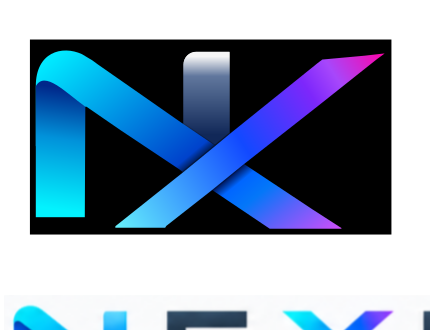
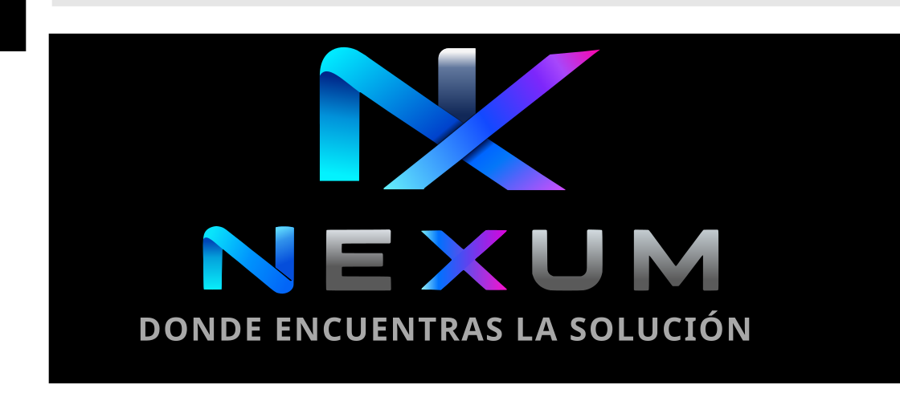

01
Electrónica
Placas, fuentes, control, potencia y fallas electrónicas complejas.

NEXUM EntrarReparación electrónica, electrodomésticos, energía, movilidad y adaptaciones. Un mismo lugar para problemas que necesitan conocimiento y una solución real.

No vendemos una respuesta genérica. Analizamos el equipo, determinamos la causa y trabajamos sobre una solución técnicamente viable.
Placas, fuentes, control, potencia y fallas electrónicas complejas.
Diagnóstico y reparación de equipos del hogar y cocina.
Inversores, baterías, cargadores y estaciones de energía.
Proyectos especiales cuando la solución estándar no basta.
La reparación no comienza cambiando piezas. Comienza entendiendo qué está ocurriendo.
Identificamos el equipo, sus datos y el motivo de la visita.
Buscamos la causa de la falla antes de proponer una reparación.
Aplicamos una reparación o adaptación técnicamente viable.
Registramos el resultado y mantenemos el historial del equipo.
Cuando tengas una cuenta podrás consultar tus equipos y reparaciones desde un mismo lugar.
Los módulos de equipos, reparaciones y notificaciones se irán habilitando sobre la misma cuenta.